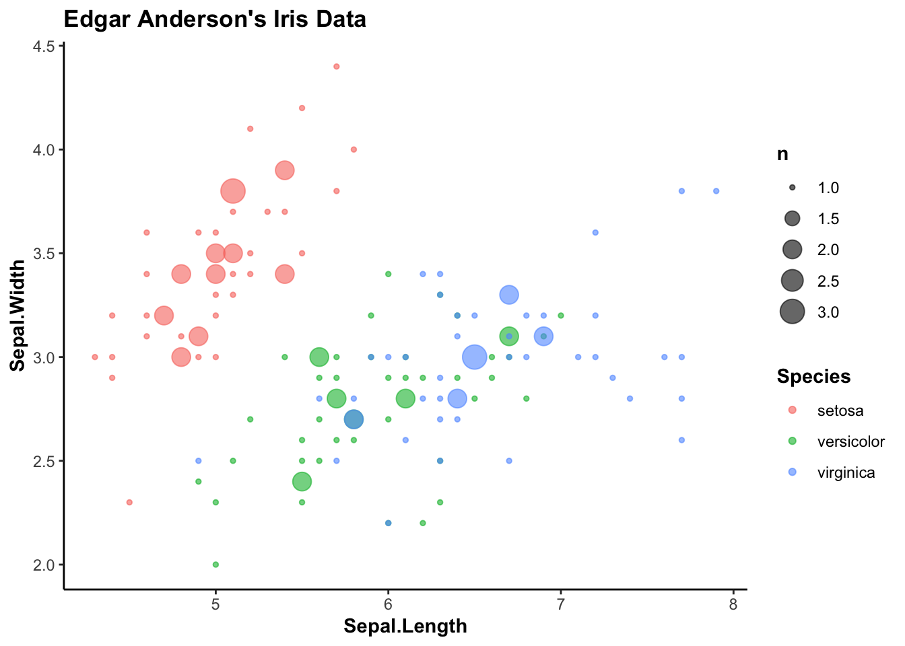
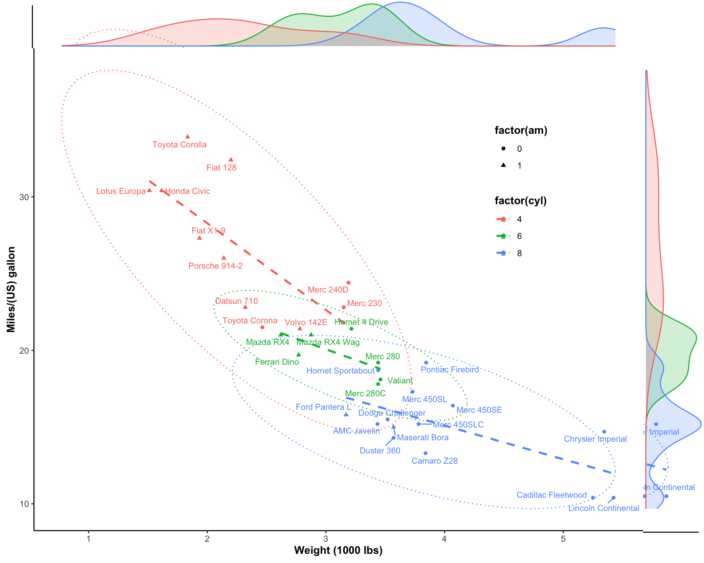
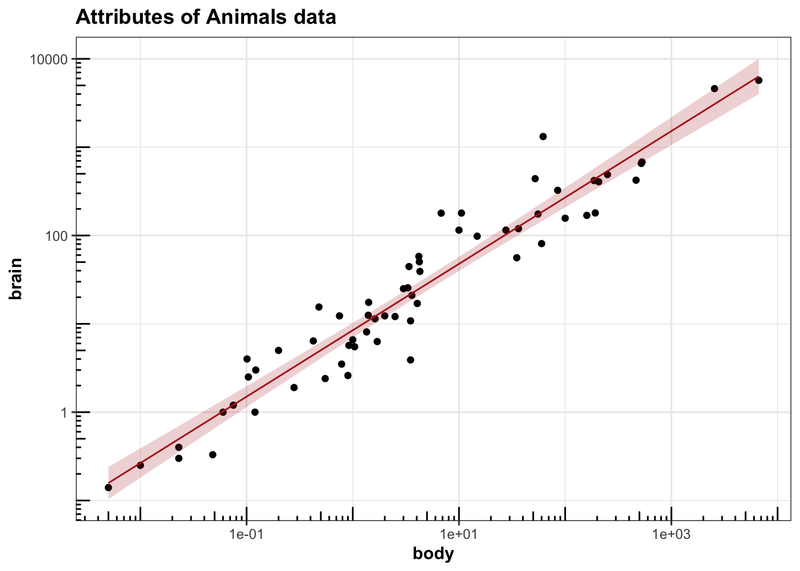
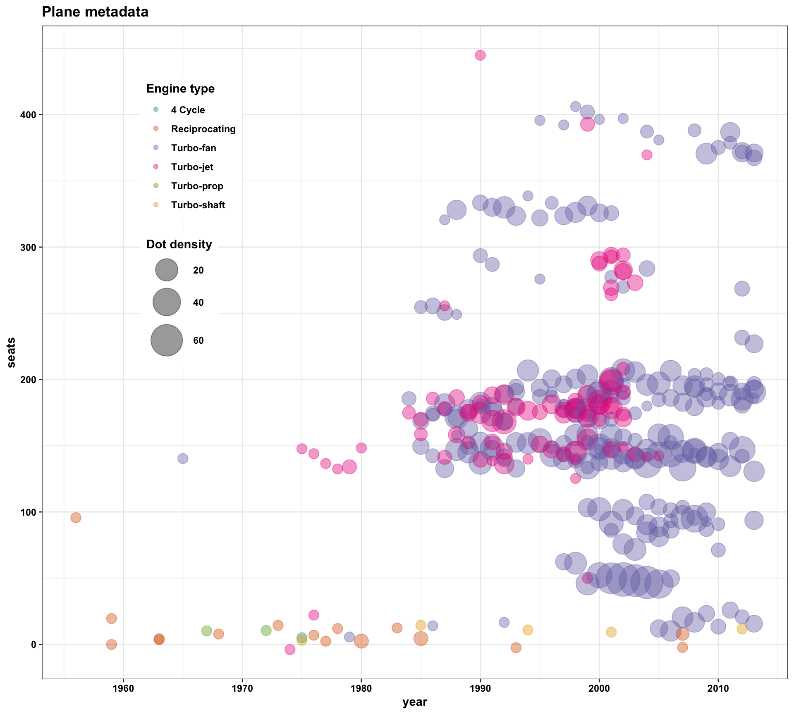
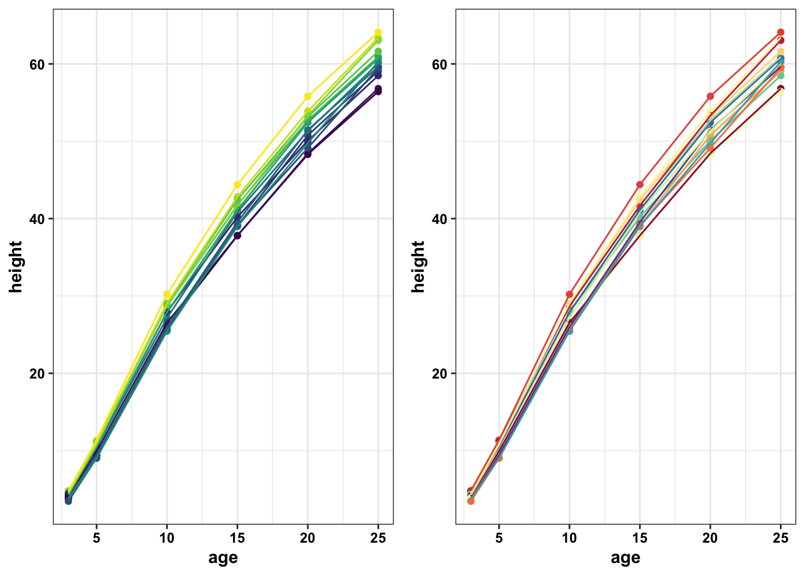
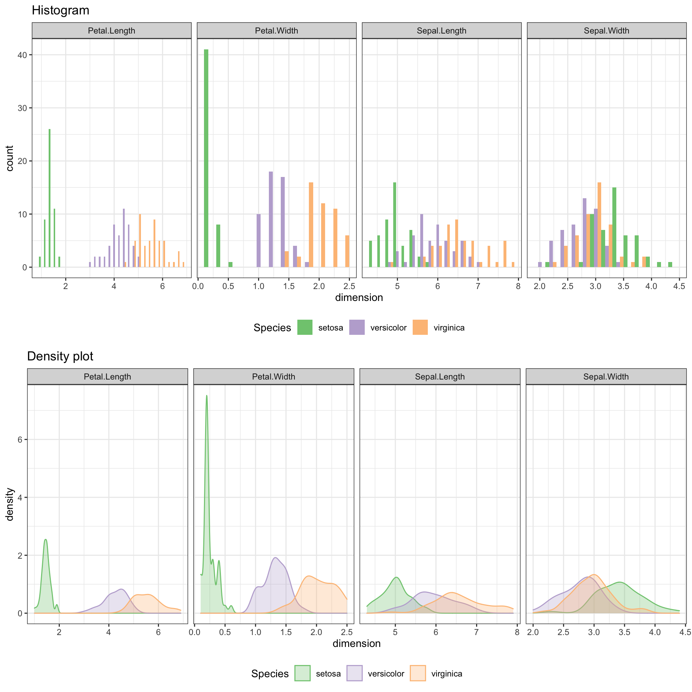

RVision Mini-Gallery
Bo Yuan
11/5/2019
This document serves as a quick demonstration of some of the useful codes I’ve been using frequently for R plotting. All dataset used is built in R, and there is no need to import external data (web-linkage, literature, etc.) to run the script.
While this document is not intended to be error-free, the script should run without error. If there are any problems, please report to yuanbo.faith@gmail.com.
More plots on the way.
library(ggplot2)
library(tidyr)
library(dplyr)
library(stringr)
library(rebus)
library(gridExtra)
library(cowplot)
library(ggrepel)
library(ggExtra)
library(RColorBrewer)
library(viridis)
library(nycflights13)
library(MASS)
library(leaflet) # map drawing
library(ggthemes) # for easeir theme setting
library(wordcloud)1 Scatterplot
1.1 Old Faithful Geyser
head(faithful)## eruptions waiting
## 1 3.600 79
## 2 1.800 54
## 3 3.333 74
## 4 2.283 62
## 5 4.533 85
## 6 2.883 55p = ggplot(faithful,
aes(x = waiting, y = eruptions)) +
geom_point(alpha = .5,
size = 3,
position = "jitter") +
theme_classic() +
theme(title = element_text(face = "bold"))
p
ggMarginal(p) # add marginal density plot1.2 Iris flowers
1.2.1 Plot 1
ggplot(iris,
aes(Sepal.Length, y = Sepal.Width, color = Species)) +
geom_count(alpha = .6) + # use point size to show data density (overcome overlaping)
theme_classic() +
labs(title = "Edgar Anderson's Iris Data") +
theme(title = element_text(face = "bold"))
1.2.2 Plot 2
head(iris)## Sepal.Length Sepal.Width Petal.Length Petal.Width Species
## 1 5.1 3.5 1.4 0.2 setosa
## 2 4.9 3.0 1.4 0.2 setosa
## 3 4.7 3.2 1.3 0.2 setosa
## 4 4.6 3.1 1.5 0.2 setosa
## 5 5.0 3.6 1.4 0.2 setosa
## 6 5.4 3.9 1.7 0.4 setosaggplot(iris,
aes(x = Sepal.Length, y = Sepal.Width,
color = Petal.Length, size = Petal.Width)) +
geom_point(position = position_jitter(.2, .2), alpha = .6) + # add small random noise to dots' position to avoid overlap
geom_smooth(method = "lm", color = "black", se = F, size = .5) +
facet_wrap(~Species) + # facet based on species
# polish up
theme_bw() +
scale_color_continuous(low = "steelblue", high = "black") + # control colorbar for Petal.Length
theme(title = element_text(face = "bold"),
axis.title = element_text(color = "firebrick", face = "bold"),
axis.text = element_text(color = "firebrick"),
strip.background = element_blank(),
strip.text = element_text(face = "bold", color = "firebrick", size = 12)) +
labs(title = "Edgar Anderson's Iris Data")
1.3 Diamonds dataset
head(diamonds)## # A tibble: 6 x 10
## carat cut color clarity depth table price x y z
## <dbl> <ord> <ord> <ord> <dbl> <dbl> <int> <dbl> <dbl> <dbl>
## 1 0.23 Ideal E SI2 61.5 55 326 3.95 3.98 2.43
## 2 0.21 Premium E SI1 59.8 61 326 3.89 3.84 2.31
## 3 0.23 Good E VS1 56.9 65 327 4.05 4.07 2.31
## 4 0.290 Premium I VS2 62.4 58 334 4.2 4.23 2.63
## 5 0.31 Good J SI2 63.3 58 335 4.34 4.35 2.75
## 6 0.24 Very Good J VVS2 62.8 57 336 3.94 3.96 2.48dim(diamonds)## [1] 53940 10ggplot(diamonds,
aes(x = carat, y = price, color = cut)) +
geom_point(alpha = .4, shape = ".") + # "shape = "." and transparency set to .4 decrease overlap
geom_smooth(method = "lm", se = F, size = .6, linetype = "dashed") + # regression
# polish up
scale_color_brewer(palette = "Set1") +
theme_bw() +
theme(legend.position = c(.8, .2),
title = element_text(face = "bold")) +
coord_cartesian(xlim = c(0, 4), ylim = c(0, 20000)) + # zoom in
labs(title = "Prices of 50,000 round cut diamonds")1.4 Cars dataset
p = ggplot(mtcars,
aes(x = wt, y = mpg,
color = factor(cyl), shape = factor(am))) + # use of "factor()" change cyl and am from continuous to discrete variables; particularly important since "shape" is discrete
geom_point() +
geom_smooth(aes(group = cyl), method = "lm", se = F, linetype = "dashed") + # regression line. specification of "aes(group = cyl)" ensures grouping based on cylinder (cyl) number alone; if not specified, inheriting aesthetic from above, regression is performed based on combinations of cyl and auto/manual transmission (am)
geom_text_repel(aes(label = rownames(mtcars)), size = 3) + # add car names, avoiding overlap
# polish up
theme_classic() +
theme(legend.position = c(.8, .7),
title = element_text(face = "bold")) +
stat_ellipse(aes(group = cyl), linetype = "dotted") + # add distribution ellipse
labs(x = "Weight (1000 lbs)", y = "Miles/(US) gallon")
p
ggMarginal(p, type = "density", size = 10, groupColour = T, groupFill = T, alpha = .2) # add marginal density plot
1.5 Mammals dataset
ggplot(mammals,
aes(x = body, y = brain)) + geom_point() +
geom_smooth(method = "lm", fill = "firebrick", color = "firebrick", alpha = .2, size = .5) +
scale_x_log10() +
scale_y_log10() + # log transform axis
# polish up
annotation_logticks() + # add log10 marks
theme_bw() +
labs(title = "Attributes of Animals data") +
theme(title = element_text(face = "bold"))
1.6 New york flight dataset
theme_set(theme_bw() +
theme(title = element_text(colour = "black", face = "bold"),
axis.text = element_text(colour = "black", face = "bold"),
legend.text = element_text(colour = "black", face = "bold"),
legend.title = element_text(colour = "black", face = "bold")))
planes %>%
ggplot(aes(x = year, y = seats, color = engine)) +
geom_count(alpha = .4,
position = position_jitter(0, 10)) +
scale_x_continuous(breaks = seq(1960, 2010, by = 10)) +
scale_color_brewer(palette = "Dark2", "Engine type") +
scale_size(range = c(4, 14), "Dot density") +
theme(legend.position = c(.2, .7)) +
labs(title = "Plane metadata")
2 Lines plot
2.1 Loblolly dataset
# The growth of Loblolly pine trees
p1 = Loblolly %>%
ggplot(aes(x = age, y = height, color = Seed)) +
geom_point() +
geom_line() +
theme(legend.position = "")
# Set up different colors
color.func = brewer.pal(11, "Spectral") %>% colorRampPalette() # divide the "Spectral" 1 colors into n colors;
seed.color = color.func(Loblolly$Seed %>% n_distinct()) %>% # n = number of seeds
sample() # randomly shuffle the color orders so that similar colors may be displayed apart
p2 = p1 + scale_color_manual(values = seed.color)
grid.arrange(p1, p2, nrow = 1)
2.2 Indometh dataset
2.2.1 Spaghetti plot
# spaghetti plot
p1 =
Indometh %>%
ggplot(aes(x = time, y = conc, color = Subject)) +
geom_point(position = position_dodge(.1)) + # add random noise to point coordinates to avoid overlap
geom_line(position = position_dodge(.1)) + # add random noise to line coordinates to avoid overlap, in line with points
scale_color_brewer(palette = "Dark2") +
theme_bw() +
theme(legend.position = "NA",
panel.grid = element_blank())
p2 = p1 + scale_y_log10() +
labs(y = "conc. logarithmically transformed") + # log transform y-axis
annotation_logticks() # add scale ticks
ggdraw() +
draw_plot(p1) +
draw_plot(p2, x = .3, y = .3, width = .6, height = .6)2.2.2 Spaghetti plot with trend line
# Create dataset containing averaged trend line
# Create sumamry dataset of the trending line
Indometh.summary =
Indometh %>%
group_by(time) %>%
summarise(conc.mean = mean(conc),
conc.sd = sd(conc),
conc.max = max(conc),
conc.min = min(conc))
Indometh.summary## # A tibble: 11 x 5
## time conc.mean conc.sd conc.max conc.min
## <dbl> <dbl> <dbl> <dbl> <dbl>
## 1 0.25 2.08 0.414 2.72 1.5
## 2 0.5 1.32 0.271 1.63 0.94
## 3 0.75 0.918 0.176 1.16 0.71
## 4 1 0.683 0.204 0.89 0.39
## 5 1.25 0.557 0.187 0.8 0.3
## 6 2 0.332 0.0970 0.42 0.19
## 7 3 0.198 0.0765 0.32 0.12
## 8 4 0.137 0.0388 0.2 0.11
## 9 5 0.125 0.0641 0.25 0.08
## 10 6 0.09 0.0200 0.12 0.07
## 11 8 0.0717 0.0147 0.09 0.05p1 = Indometh %>%
ggplot(aes(x = time)) + # x = time shared by all following points and line aesthetic, so specified here
geom_point(aes(y = conc, color = Subject)) + # "conc" and "Subject" not shared by Indometh.summary, so specified here instead of upper line
geom_line (aes(y = conc, color = Subject)) +
scale_color_brewer(palette = "Set2") +
# Add averaged trending line
geom_line(data = Indometh.summary,
aes(y = conc.mean), color = "black") +
geom_errorbar(data = Indometh.summary,
aes(ymin = conc.mean - conc.sd,
ymax = conc.mean + conc.sd)) +
geom_point(data = Indometh.summary,
aes(y = conc.mean),
shape = 21, fill = "white", size = 3) + # most top layer above the lines and errorbars
theme_bw() +
theme(legend.position = "NA")
p2 = p1 + coord_cartesian(xlim = c(0, 2)) +
labs(title = "Zoom-in view\n for denser time intervals")
ggdraw() +
draw_plot(p1) +
draw_plot(p2, x = .3, y = .3, width = .6, height = .6)2.3 Airquality dataset
head(airquality)## Ozone Solar.R Wind Temp Month Day
## 1 41 190 7.4 67 5 1
## 2 36 118 8.0 72 5 2
## 3 12 149 12.6 74 5 3
## 4 18 313 11.5 62 5 4
## 5 NA NA 14.3 56 5 5
## 6 28 NA 14.9 66 5 6airquality1 = airquality %>%
arrange(Month, Day) %>%
mutate(Time = 1:nrow(airquality) )
high.temp = airquality1 %>% filter(Temp >= 90)
airquality1 %>%
ggplot(aes(x = Time, y = Temp,
color = factor(Month))) +
geom_line(aes(group = 1)) +
geom_point(shape = 21, fill = "white", stroke = 1) +
theme_bw() +
theme(axis.text.x = element_blank(),
panel.grid = element_blank(),
legend.position = c(.6, .05),
legend.direction = "horizontal") +
# rectangle highlighting high-termperature region
geom_rect(aes(xmin = Time-1, xmax =Time, ymin = 90, ymax = 98),
# many small rectangles combined together...one rectangle for each row
color = NA, fill = "firebrick", alpha = .1) +
# highlight high-temperature threshold line
geom_rect(aes(xmin = Time-1, xmax = Time, ymin = 90, ymax = 90),
# many small segments combined together...one segment for each row
color = "firebrick", size = .2) +
# Text annotation
annotate("text", x = 20, y = 97, label = "HIGH HEAT ZONE",
fontface = "bold", color ="firebrick") +
# highlight high-termperature points with red fill
geom_point(data = high.temp,
shape = 21, fill = "firebrick", size = 3, show.legend = F) +
# new bigger points cover prior points; x, y coordinates inherit upper lines
# Text label for high temperature
geom_text_repel(data = high.temp,
aes(label = Temp), # x, y coordinates inherit upper lines
size = 3, color = "firebrick") 3 Bar plots
3.1 Car dataset
# convert from matrix to data frame or tibble
mtcars.t = as_tibble(mtcars)
mtcars.t$cars = rownames(mtcars)
# Arrange cars in order of horsepower (hp)
mtcars.t = mtcars.t %>% arrange(hp)
cars.ordered = mtcars.t$cars # vector of cars in order of horsepower
p.bar = mtcars.t %>%
mutate(cars = factor(cars, levels = cars.ordered, ordered = T)) %>%
ggplot(aes(x = cars, y = hp, fill = factor(cyl))) +
geom_bar(stat = "identity") +
coord_flip() +
# polish up
theme_minimal() +
theme(legend.position = c(.8, .2),
axis.text = element_text(color = "black")) +
# Add pattern/trending line
geom_point(show.legend = F) +
geom_line(aes(group = NA)) # group = "" or group = 1...both work too!
p.bar
# polar plot
p.polar = p.bar + coord_polar() +
# polish up
theme(legend.position = c(.5, .2),
legend.direction = "horizontal",
axis.text.y = element_blank(),
axis.title = element_blank()) +
annotate(geom = "text", x = .5, y = .5, # put x, y coordinates here otherwise return an error
label = "Spinning\nhorsepower",
color = "white", fontface = "bold", size = 5) +
scale_fill_brewer(palette = "Dark2") ## Coordinate system already present. Adding new coordinate system, which will replace the existing one.p.polar# Rotated car names
text.angle = 90 - 360 * (1:nrow(mtcars) - .5)/nrow(mtcars) # rotate cars name together with bars
text.angle = ifelse(text.angle < -90, 180 + text.angle, text.angle) # control flipping direction
p.polar +
geom_text(aes(y =hp + 80, label = cars), angle = text.angle) +
theme(axis.text = element_blank(),
legend.position = c(.5, 0.15))4 Histogram
4.1 Iris dataset
iris.tidy = gather(iris, 1:4, # gather the first four variables into one variable (named as "measure)
key = measure, # the new variable "measure" contains the prior four variable names
value = dimension) # "dimension" contains all numeric values associated with the prior four variables
p1 = ggplot(iris.tidy,
aes(x = dimension, fill = Species)) +
geom_histogram(binwidth = .2, position = "dodge") +
facet_wrap(~measure, nrow = 1,
scales = "free_x") + # independent x-axis for each facet
scale_fill_brewer(palette = "Accent") +
theme_bw() +
theme(legend.position = "bottom") +
labs(title = "Histogram")p2 = ggplot(iris.tidy,
aes(x = dimension,
color = Species, # "color": for the color of the boarder line
fill = Species)) + # "fill": for the color of the filling area
geom_density(alpha = .3) + # adjust the filling transparency
facet_wrap(~measure, nrow = 1,
scales = "free_x") + # independent x-axis for each facet
scale_color_brewer(palette = "Accent") +
scale_fill_brewer(palette = "Accent") +
theme_bw() +
theme(legend.position = "bottom") +
labs(title = "Density plot")grid.arrange(p1, p2, nrow = 2) # combine
4.2 Rock dataset
head(rock)## area peri shape perm
## 1 4990 2791.90 0.0903296 6.3
## 2 7002 3892.60 0.1486220 6.3
## 3 7558 3930.66 0.1833120 6.3
## 4 7352 3869.32 0.1170630 6.3
## 5 7943 3948.54 0.1224170 17.1
## 6 7979 4010.15 0.1670450 17.1# Check histogram for all four variables
gather(rock, 1:4, # gather all four variables into one variable named "measure"
key = measure, # the new variable "measure" contains all prior four variable names
value = values # "values" contains all numeric values associated with prior four variables
) %>% # the pipeline feeds the gathered dataset into the 1st argument position of ggplot and streamlines programming
ggplot(aes(x = values)) +
geom_histogram(fill = "Steelblue") +
facet_wrap(~measure, # facet based on "measure", i.e., the prior four variables
scales = "free") + # independent x-y scale for all four faceted plots
theme_minimal() +
theme(strip.text = element_text(color = "firebrick", face = "bold"),
panel.grid = element_line(color = "firebrick", size = .2))4.3 Diamonds dataset
ggplot(diamonds, aes(x = cut, fill = clarity)) +
geom_histogram(stat = "count", position = "fill") +
theme_minimal()5 Lollipop plot
5.1 Cars dataset
# convert from matrix to data frame or tibble
mtcars.t = as_tibble(mtcars)
mtcars.t$cars = rownames(mtcars)
mtcars.t## # A tibble: 32 x 12
## mpg cyl disp hp drat wt qsec vs am gear carb cars
## <dbl> <dbl> <dbl> <dbl> <dbl> <dbl> <dbl> <dbl> <dbl> <dbl> <dbl> <chr>
## 1 21 6 160 110 3.9 2.62 16.5 0 1 4 4 Mazda…
## 2 21 6 160 110 3.9 2.88 17.0 0 1 4 4 Mazda…
## 3 22.8 4 108 93 3.85 2.32 18.6 1 1 4 1 Datsu…
## 4 21.4 6 258 110 3.08 3.22 19.4 1 0 3 1 Horne…
## 5 18.7 8 360 175 3.15 3.44 17.0 0 0 3 2 Horne…
## 6 18.1 6 225 105 2.76 3.46 20.2 1 0 3 1 Valia…
## 7 14.3 8 360 245 3.21 3.57 15.8 0 0 3 4 Duste…
## 8 24.4 4 147. 62 3.69 3.19 20 1 0 4 2 Merc …
## 9 22.8 4 141. 95 3.92 3.15 22.9 1 0 4 2 Merc …
## 10 19.2 6 168. 123 3.92 3.44 18.3 1 0 4 4 Merc …
## # … with 22 more rows# Arrange cars in order of horsepower (hp)
mtcars.t = mtcars.t %>% arrange(hp)
cars.ordered = mtcars.t$cars # vector of cars in order of horsepower
mtcars.t.ordered = mtcars.t %>%
mutate(cars = factor(cars, levels = cars.ordered, ordered = T))p1 = mtcars.t.ordered %>%
ggplot(aes(x = cars, y = hp, color = factor(am))) +
geom_point(aes(size = factor(cyl))) +
# Do not specify point size in upper ggplot() line;
# otherwise geom_segment lines width will also be dependent on cylinder number, which is less desirable
geom_segment(aes(x = cars, xend = cars, y = 0, yend = hp)) +
coord_flip() +
# polish up
scale_color_brewer(palette = "Set2") +
theme_minimal() +
theme(legend.position = c(.8, .3),
axis.text = element_text(color = "black"),
axis.title = element_text(color = "black", face = "bold"))
p1Ignore warning “Using size for a discrete variable is not advised”. In this case, treating cylinder number as factor a discrete variable is more desirable than otherwise as numeric continuous variable.
Key in ordered plotting is to convert the associated variables (cars in this case) into: ORDERED FACTOR.
# polar plot
text.angle = 90 - (1:nrow(mtcars) - .5) / nrow(mtcars) * 360
text.angle = ifelse(text.angle < -90, 180 + text.angle, text.angle)
p1 + coord_polar() +
geom_text(aes(y = hp + 100, label = cars),
angle = text.angle,
show.legend = F) +
theme(axis.text = element_blank(),
axis.title = element_blank(),
legend.position = c(.5, .15),
legend.direction = "horizontal",
panel.grid = element_blank())## Coordinate system already present. Adding new coordinate system, which will replace the existing one.## Warning: Using size for a discrete variable is not advised.6 Maps
# world map
my.world = map_data("world")
dim(my.world); head(my.world); tail(my.world)## [1] 99338 6## long lat group order region subregion
## 1 -69.89912 12.45200 1 1 Aruba <NA>
## 2 -69.89571 12.42300 1 2 Aruba <NA>
## 3 -69.94219 12.43853 1 3 Aruba <NA>
## 4 -70.00415 12.50049 1 4 Aruba <NA>
## 5 -70.06612 12.54697 1 5 Aruba <NA>
## 6 -70.05088 12.59707 1 6 Aruba <NA>## long lat group order region subregion
## 100959 12.43916 41.89839 1627 100959 Vatican enclave
## 100960 12.43838 41.90620 1627 100960 Vatican enclave
## 100961 12.43057 41.90547 1627 100961 Vatican enclave
## 100962 12.42754 41.90073 1627 100962 Vatican enclave
## 100963 12.43057 41.89756 1627 100963 Vatican enclave
## 100964 12.43916 41.89839 1627 100964 Vatican enclaven.country = my.world$region %>% n_distinct()
color.func = brewer.pal(12, "Paired") %>% colorRampPalette() # Divide "Paired" colors into more colors
country.colors = color.func(n.country) # randomly shuffle color order; otherwise adjacent regions will be of similar colors
worldmap = ggplot() +
geom_polygon(data = my.world,
aes(x = long, y = lat, # longitude vs. latitude
group = group, # dots for same group connected together
fill = region), # fill color by region (country)
color = "white" # country boarder
) +
# polish up
guides(fill=FALSE) + # not show legend
coord_fixed(1.2) + # keep aspect ratio the same
scale_fill_manual(values = country.colors) +
scale_x_continuous(breaks = seq(-180, 180, by = 60),name = "Longitude") +
scale_y_continuous(breaks = seq(-90, 90, by = 30), name = "Latitude") +
theme_minimal()
worldmap6.1 BRICS VS NATO
Disclaim: this plot does not display any political views. It is only used for communicating plotting techniques.
# Brics countries
Brics = c("Brazil", "Russia", "India", "China", "South Africa")
# source: https://www.investopedia.com/terms/b/brics.asp
Brics.col = brewer.pal(length(Brics), "Reds") # color for Bricks countries
names(Brics.col) = Brics; Brics.col # create named vectors## Brazil Russia India China South Africa
## "#FEE5D9" "#FCAE91" "#FB6A4A" "#DE2D26" "#A50F15"# NATO countries
NATO = c("Albania", "Belgium", "Bulgaria", "Canada", "Croatia", "Czech Republic", "Denmark", "Estonia", "France", "Germany", "Greece", "Hungary", "Iceland", "Italy", "Latvia", "Lithuania", "Luxembourg", "Montenegro", "Netherlands", "Norway", "Poland", "Portugal", "Romania", "Slovakia", "Slovenia", "Spain", "Turkey", "UK", "USA")
# source : https://www.nti.org/learn/treaties-and-regimes/north-atlantic-treaty-organization-nato/
NATO %in% (map_data("world")$region %>% unique()) # check all NATO countries are listed in map_data ## [1] TRUE TRUE TRUE TRUE TRUE TRUE TRUE TRUE TRUE TRUE TRUE TRUE TRUE TRUE
## [15] TRUE TRUE TRUE TRUE TRUE TRUE TRUE TRUE TRUE TRUE TRUE TRUE TRUE TRUE
## [29] TRUE# [3:9] to remove the less visible light blue colors
NATO.col.func = c(brewer.pal(9, "Blues")[3:9]) %>% colorRampPalette()
NATO.col = NATO.col.func(n = length(NATO))
names(NATO.col) = NATO; NATO.col # create named vectors## Albania Belgium Bulgaria Canada Croatia
## "#C6DBEF" "#BDD7EC" "#B4D3E9" "#ACD0E6" "#A3CCE3"
## Czech Republic Denmark Estonia France Germany
## "#9AC8E0" "#8FC2DD" "#84BBDB" "#79B6D9" "#6EB0D6"
## Greece Hungary Iceland Italy Latvia
## "#65AAD3" "#5CA4D0" "#539ECC" "#4A98C9" "#4292C6"
## Lithuania Luxembourg Montenegro Netherlands Norway
## "#3A8AC2" "#3383BE" "#2C7CBB" "#2575B7" "#1F6EB3"
## Poland Portugal Romania Slovakia Slovenia
## "#1967AD" "#1460A8" "#0F5AA3" "#09539D" "#084C95"
## Spain Turkey UK USA
## "#08458A" "#083E80" "#083775" "#08306B"# Combine Bricks with NATO
country = c(Brics, NATO)
country.colors = c(Brics.col, NATO.col)# Plot
p.world = ggplot(data = map_data("world"), # add global background
aes(x = long, y = lat, group = group)) +
geom_polygon(fill = "grey", color = "white") +
coord_fixed(1.2) +
theme_minimal() +
geom_polygon(data = map_data("world", region = country), # add NATO & BRICS countries
aes(fill = region), color = "white") +
scale_fill_manual(values = country.colors) +
# extra polish up
labs(title = "NATO (blues) vs BRICS (reds)") +
theme(legend.position = "bottom",
legend.direction = "horizontal",
title = element_text(face = "bold")) +
guides(fill = guide_legend(nrow = 4)) + # legend row number
scale_x_continuous(breaks = seq(-180, 180, by = 60),name = "Longitude") +
scale_y_continuous(breaks = seq(-90, 90, by = 30), name = "Latitude")
p.world# europe zoom in (as insert)
p.euro = p.world +
coord_fixed(1.2, xlim = c(-25, 50), ylim = c(30, 70)) +
# theme, labs and scale overwite those of p.world
theme(panel.border = element_rect(fill = NA, color = "black"),
panel.grid = element_blank(),
title = element_text(face = "bold"),
axis.title = element_blank(),
legend.position = "") +
labs(title = "European NATO zoomed-in") +
scale_x_continuous(breaks = seq(-25, 50, by = 25)) +
scale_y_continuous(breaks = seq(30, 70, by = 10))
p.euroggdraw() +
draw_plot(p.world) +
draw_plot(p.euro, x = 0.05, y = -.06, width = .27)6.2 US crime dataset
USArrests.2 = USArrests %>%
mutate(region = rownames(USArrests) %>% # add "region" column of state names
tolower()) # all states in small letters (to merge with "state" dataset)
# these two states are not in the "state" mainland dataset
USArrests.2[!USArrests.2$region %in% map_data("state")$region, ]## Murder Assault UrbanPop Rape region
## 2 10.0 263 48 44.5 alaska
## 11 5.3 46 83 20.2 hawaiiUSArrests.2 = USArrests.2 %>%
inner_join(map_data("state"), by = "region") # augment with US geographical data
USArrests.2 %>%
ggplot() +
theme_map() +
geom_polygon(aes(x = long, y = lat, group = group, fill = Murder),
color = "white", size = 1) + # set up state border line color and width
# polish up
coord_fixed(1.4) +
labs(title = "Murder per 100K residents, USA, 1973") +
scale_fill_viridis(option = "magma", direction = -1) + # direction: reverse the color scale
theme(legend.position = "bottom") +
guides(fill = guide_colourbar(barwidth = 20, direction = "horizontal")) +
theme(plot.title = element_text(hjust = .5, size = 14, face = "bold"))6.3 Database map
library(leaflet)
# Background 1: NASA
leaflet() %>%
addTiles() %>%
setView( lng = 2.34, lat = 48.85, zoom = 5 ) %>%
addProviderTiles("NASAGIBS.ViirsEarthAtNight2012")# Background 2: World Imagery
leaflet() %>%
addTiles() %>%
setView( lng = 2.34, lat = 48.85, zoom = 3 ) %>%
addProviderTiles("Esri.WorldImagery")6.4 US mainland airports
library(stringr)
airport.US.mainland = airports %>%
filter(tzone %>% str_detect("America"),
lon < -50, lat < 50)
# select EWR airport
airport.EWR = airports %>% filter(faa == "EWR")Remove EWR from mainland airport dataset (otherwise geom_curve connection would report and error, as the same EWR point can’t connect to itself)
airport.US.mainland = airport.US.mainland %>% anti_join(airport.EWR)## Joining, by = c("faa", "name", "lat", "lon", "alt", "tz", "dst", "tzone")ggplot(data = map_data("usa") ) + # US map background
geom_polygon(aes(x = long, y = lat, group = group),
fill = "black") +
coord_fixed(1.5) +
theme_map() + # from ggthemes package
# add airports
geom_point(data = airport.US.mainland,
aes(x = lon, y = lat),
color = "tomato", shape = ".") +
# connect EWR airport with all other airports
geom_curve(data = airport.US.mainland,
aes(x = airport.EWR$lon, xend = lon,
y = airport.EWR$lat, yend = lat),
alpha = .1, color = "turquoise2",
curvature = .1) +
annotate(geom = "Text", label = "EWR", color = "Black", fontface = "bold",
x = airport.EWR$lon + 1.8, y = airport.EWR$lat-.8)7 Word cloud
library(nycflights13)
library(wordcloud)
plane.makers = planes %>% dplyr::select(manufacturer) %>%
table() # count occurrence frequency
set.seed(1234)
par(bg="black") # set background
wordcloud(words = names(plane.makers),
freq = plane.makers %>% sqrt(), # reduce frequency difference
min.freq = 1, random.order = F, rot.per = .1,
colors = terrain.colors(8))